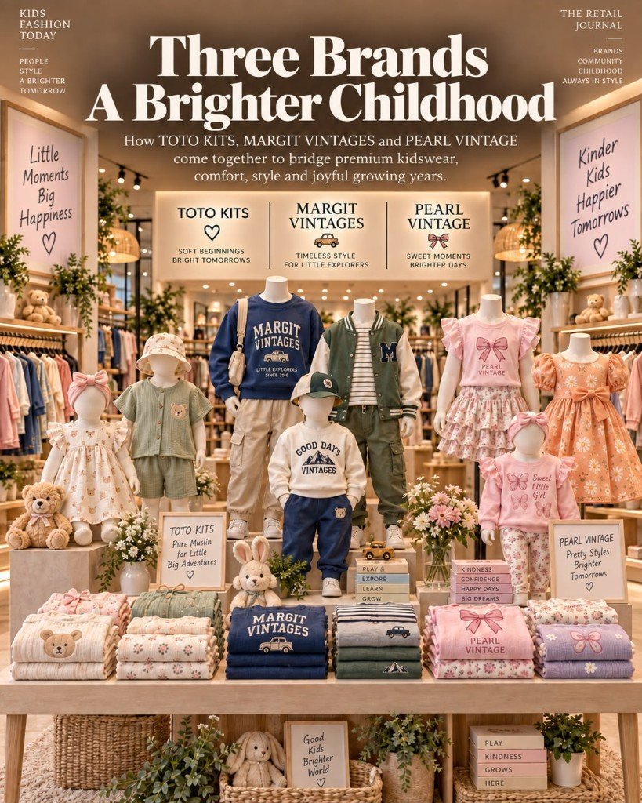

Three brands. A brighter childhood.
Muthuvel Lifestyle designs original children’s apparel in knitted and muslin fabrics, and also develops styles from a buyer brief. A 7,000 sq.ft. cut-to-pack facility in Tiruppur takes those collections through to shipment for buyers, wholesalers, and retailers in India and abroad.

TOTOKITS
Boys, girls, and unisex. Muslin dresses, babywear, and lightweight coordinated styles — softness, breathability, and age-appropriate construction.
View the collection
Margit Vintages
T-shirts, polos, shorts, co-ord sets, track pants, sweatshirts, and winter sets. Comfort, durability, and everyday performance.
View the collection
Pearl Vintage
Dresses, frill tops, co-ord sets, leggings, and track pants. Softness, fashion detail, and easy movement.
View the collectionThe lookbook
Original knits and muslin, created in-house and carried through to finishing.


From design to shipment
We design. We develop. We manufacture. We deliver.
From the design to the shipment.
Sample packs, a facility tour in Tiruppur, or a quote from your tech pack or mood board.
Write to the house